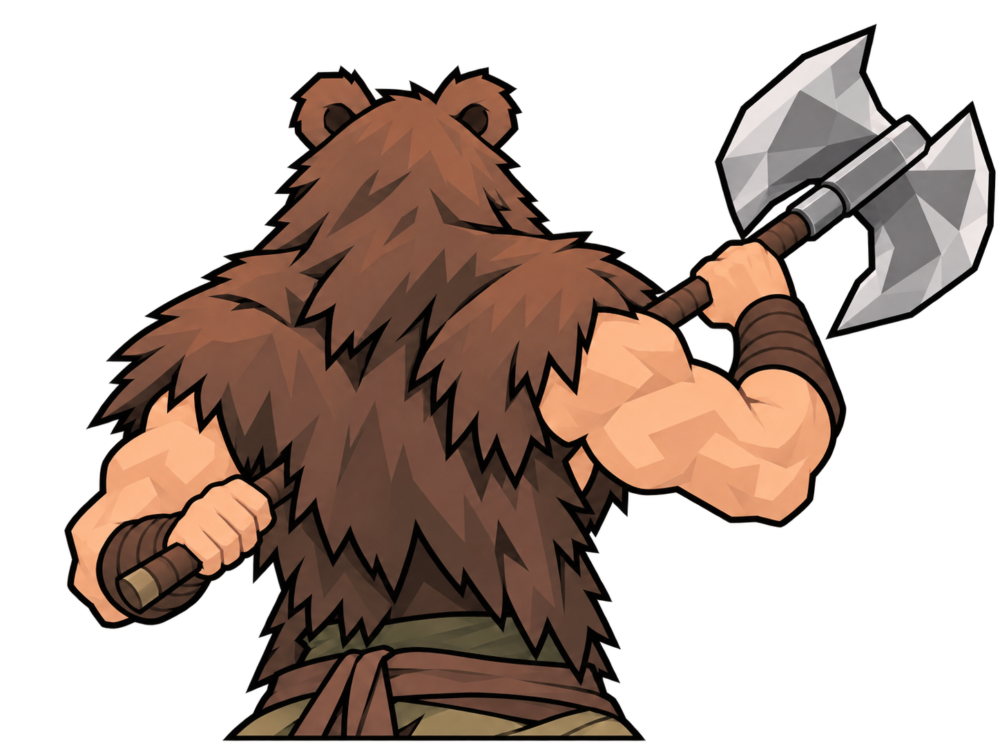
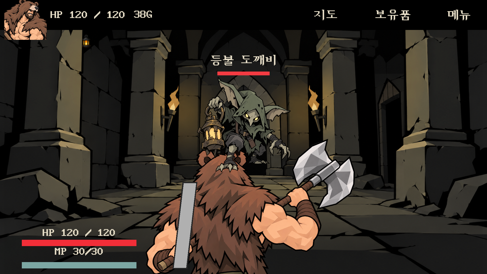

바바리안 · 후면 팔 연결 수정09
왼손을 몸 왼쪽에 두고 양쪽 팔꿈치를 굽혔습니다. 도끼도 양손 위치에 맞춰 기울기를 조정했습니다.
 이전08 · 왼손이 반대편 허리까지 뻗어 있던 구조
이전08 · 왼손이 반대편 허리까지 뻗어 있던 구조
현재 적용09 · 양쪽 팔과 손이 각자의 몸 옆에 연결되는 자세실제 Unity 전투 화면

앞모습과 워리어·위자드 등 다른 캐릭터 파일은 그대로 유지했습니다. 유지 파일 확인
전체 현재 적용본 · 검수 · 저장 경로 · 내장 image_gen 프롬프트